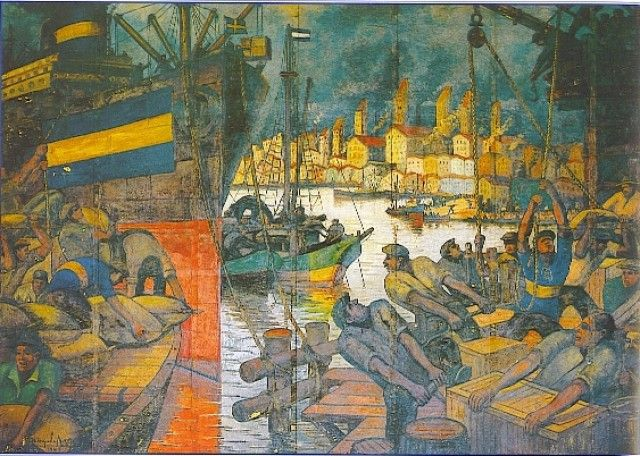

Juan Roman Riquelme:
Torneo Apertura: 1998, 2000, 2008 y 2011.
Torneo Clausura: 1999.
Copa Argentina: 2011 y 2012.
Copa Libertadores de América: 2000, 2001 y 2007.
Copa Sudamericana: 2008.
Copa Intercontinental: 2000.
LA HISTORIA DEL CLUB ATLETICO BOCA JUNIORS

Pintura que simula la creación del club por inmigrantes.
El Club Atlético Boca Juniors es una entidad deportiva argentina con sede en el barrio de La Boca, Buenos Aires. Fue fundado en dicho barrio el 3 de abril de 1905 por seis vecinos adolescentes hijos de italianos. El fútbol masculino es su disciplina más destacada, aunque también compite a nivel profesional, nacional e internacionalmente, en baloncesto, voleibol, futsal, fútbol femenino y balonmano mientras que deportes como el boxeo, judo, karate, taekwondo, gimnasia rítmica y gimnasia artística se practican a nivel amateur. Actualmente se desempeña en la Liga Profesional de Fútbol Argentino.
Boca Juniors participa de la Primera División Argentina desde 1913 y, a partir del Torneo Inicial 2013, se convirtió en el único club que disputó todas las temporadas en Primera División desde el comienzo del profesionalismo en 1931. Además, es el equipo con mayor cantidad de partidos disputados.10 A partir del 8 de junio de 2015, Boca Juniors batió el récord de mayor permanencia ininterrumpida en Primera División, con 37 312 días.11 El equipo juega sus partidos como local en el estadio Alberto J. Armando, conocido mundialmente como «La Bombonera»; allí también ha sido localista en numerosas ocasiones la Selección Argentina de fútbol, donde mantiene un invicto histórico en partidos oficiales.
A nivel local, el club cuenta con 34 campeonatos de liga de Primera División12 y 15 copas nacionales (récord argentino), entre las que se destacan cuatro ediciones de la Copa Argentina (máximo ganador del certamen: 1969, 2011-12, 2014-15 y 2019-20) y la Supercopa Argentina 2018. También posee un título honorífico de la era amateur: la Copa de Honor, obtenida en 1925; un reconocimiento de la AFA a su exitosa gira por Europa en dicho año.
A nivel internacional, es el tercer club con más títulos oficiales en el mundo (22), entre los cuales posee 18 a nivel confederativo e interconfederativo (FIFA y Conmebol) y 4 copas rioplatenses (AFA-AUF); y es el club con más títulos internacionales oficiales en toda América. Asimismo, es el máximo campeón de la Copa Intercontinental (3) a nivel mundial, junto con Peñarol, Nacional, Milan y Real Madrid. Además, es el club de América con más finales de copas internacionales confederativas con 28 (3.º a nivel mundial, detrás de las 39 del Real Madrid y las 33 del Milan).14 Inclusive, es el club récord de finales de Copa Libertadores de América: 11, y también es el segundo club con mayor cantidad de Libertadores ganadas con seis, detrás de Independiente, que tiene siete.
Sumando torneos nacionales e internacionales, es el club más exitoso y con mayor cantidad de títulos en la historia del fútbol argentino: 71 títulos oficiales, lo cual, lo convierte en el club más campeón del país. A su vez, es uno de los equipos más exitosos en el profesionalismo, y también del amateurismo, solamente superado por el extinto Alumni y Racing Club. Inclusive, es el único club del país en haber logrado al menos un título por década y uno de los dos equipos argentinos (junto con Racing) que más veces salió campeón de forma invicta: 5 (en 1919, 1924, 1926, 1998 y 2011).15 Al mismo tiempo, fue el segundo club argentino (por detrás de Racing) en alzarse con cuatro títulos oficiales en un solo año, al proclamarse campeón de la Primera División de Argentina, de la Copa Dr. Carlos Ibarguren, de la Copa de Competencia Jockey Club y de la Cup Tie Competition, todo en el año 1919 (precisamente, estos fueron los primeros cuatro campeonatos obtenidos en la historia del club).
Sus mayores logros deportivos los obtuvo en los años 1977, 2000 y 2003 cuando se consagró campeón de la Copa Intercontinental al derrotar a los representantes de la Copa de Campeones de Europa: Borussia Mönchengladbach de Alemania, Real Madrid de España y Milan de Italia respectivamente. Gracias a estas conquistas integra el grupo selecto de los únicos 29 equipos en el mundo que han ganado el máximo campeonato de clubes de fútbol a nivel mundial, entre más de 300 000 clubes reconocidos por FIFA.17
Es considerado uno de los denominados cinco grandes del fútbol argentino, a partir de que la AFA dispusiera la implementación del llamado «voto proporcional» en 1937, que consistía en darle mayor poder de decisión a aquellos clubes con mayor número de socios, mayor antigüedad y mayor cantidad de títulos.18 Es, asimismo, el único de los cinco grandes que nunca ha descendido de Primera División,19 y el único que nunca salió último, ni jugó una promoción para mantener la categoría.
Junto con River Plate protagoniza el denominado Superclásico del fútbol argentino (en el cual, domina el historial de enfrentamientos), un evento que según el periódico inglés The Observer está en el primer puesto entre los 50 espectáculos deportivos que hay que ver antes de morir,20 mientras que el también británico The Sun lo describe como la «experiencia deportiva más intensa del mundo».21 Asimismo, según una encuesta realizada en 2006, es el club más popular de la Argentina (40,4%)22 y uno de los que más simpatizantes tiene en todo el mundo.2324 Es por esto, que sus hinchas se autoproclaman como «La Mitad Más Uno».2526 Además, es la institución deportiva con más socios de Argentina (y de toda América Latina) con 230 000 asociados en 2020, y la tercera con mayor cantidad a nivel mundial.272829
Boca Juniors ha recibido algunos reconocimientos por su desempeño futbolístico. La IFFHS lo distinguió en su Clasificación histórica del Ranking Mundial de Clubes como el mejor club de Sudamérica del siglo XXI.30 Fue designado por la FIFA como el doceavo Mejor Club del Siglo, en diciembre del 2000, ocupando la misma plaza que el Liverpool de Inglaterra, Inter de Italia o Benfica de Portugal, Asimismo, fue elegido «el club más legendario en la historia de América» según la prestigiosa revista alemana Kicker, que lo ubicó en la octava posición a nivel mundial, siendo la única institución del continente dentro del top ten.31 Además, es considerado por la revista inglesa FourFourTwo como «el club de fútbol más emblemático del mundo.
LA HISTORIA LA ESCRIBIMOS NOSOTROS
Nuestros 4 idolos más ganadores
Martin Palermo:
Torneo Apertura: 1998, 2000, 2005 y 2008.
Torneo Clausura: 1999 y 2006.
Copa Libertadores de América: 2000 y 2007.
Copa Sudamericana: 2004 y 2005.
Copa Intercontinental: 2000.
Recopa Sudamericana: 2005, 2006 y 2008.

Carlos Bianchi:
Torneo Apertura: 1998, 2000 y 2003.
Torneo Clausura: 1999.
Copa Libertadores de América: 2000, 2001 y 2003.
Copa Intercontinental: 2000 y 2003.

Sebastian Battaglia:
Torneo Apertura: 2000, 2003, 2005, 2008 y 2011.
Torneo Clausura: 1999 y 2006.
Copa Libertadores de América: 2000, 2001, 2003 y 2007.
Copa Intercontinental: 2000 y 2003.
Recopa Sudamericana: 2005 y 2006.